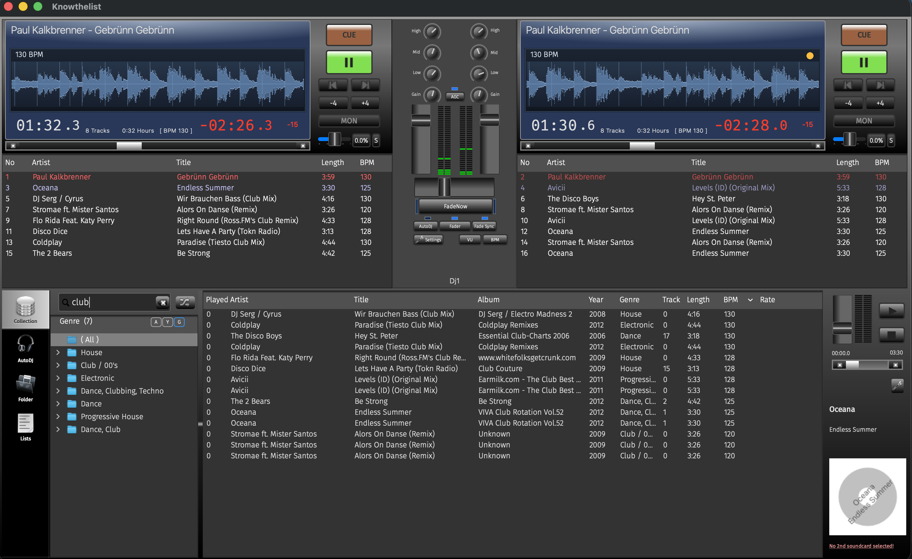

knowthelist
The Ultimate Party DJ Mixer
Knowthelist is a feature-packed, cross-platform DJ mixer and music player built for DJs and party hosts who need to react instantly while mixing. Queue up requests in real time, beat-sync two decks, set Auto DJ filters, and deliver smooth transitions.
Features
- Dual Decks: Two independent players with separate playlists for seamless mixing
- Live Collection Search: Find tracks instantly while music plays
- Full Mixer: Crossfader, 3-band EQ per deck, and per-channel gain control
- Adaptive Transition Planner: Automatically chooses the best transition for each song pair
- Beat Sync: Visual sync support with gradual tempo restoration and latency compensation
- Auto DJ: Smart random play with powerful filters
- Track Analysis: Automatic BPM detection, loudness mapping, cue points and beat-phase visualization
- Monitor Player: Pre-listen on a secondary audio device
- Pitch-Preserving Time Stretch: DJ-style tempo changes with pitch preservation
- Auto Gain Control: Keep energy levels consistent across a set
- Modern UI: Fancy tabs, custom VU meters, progress bars and rating widgets
Adaptive Auto DJ transitions
The Auto DJ transition planner reevaluates the upcoming pair whenever the current or waiting track changes, then selects an explainable transition profile based on BPM and musical style hints. Matching BPMs prioritize beat and phrase alignment, even when genre metadata is missing or inconsistent.
- Beat and phrase blend for compatible dance tracks
- Bass swap to prevent kick and bass masking
- Vocal and mid handoff so the incoming lead remains dominant
- Equal-power blend as the neutral, smooth fallback
- Hard cut for large tempo or style changes
Transitions respect duration limits, maximum tempo correction and the selected style bias. All transition modes are enabled by default and can be adjusted under Settings and Transitions.
Platforms
Runs natively on Linux, macOS and Windows.
Screenshot

Get the latest Windows, macOS and Linux packages from the v2.4.1 GitHub release.